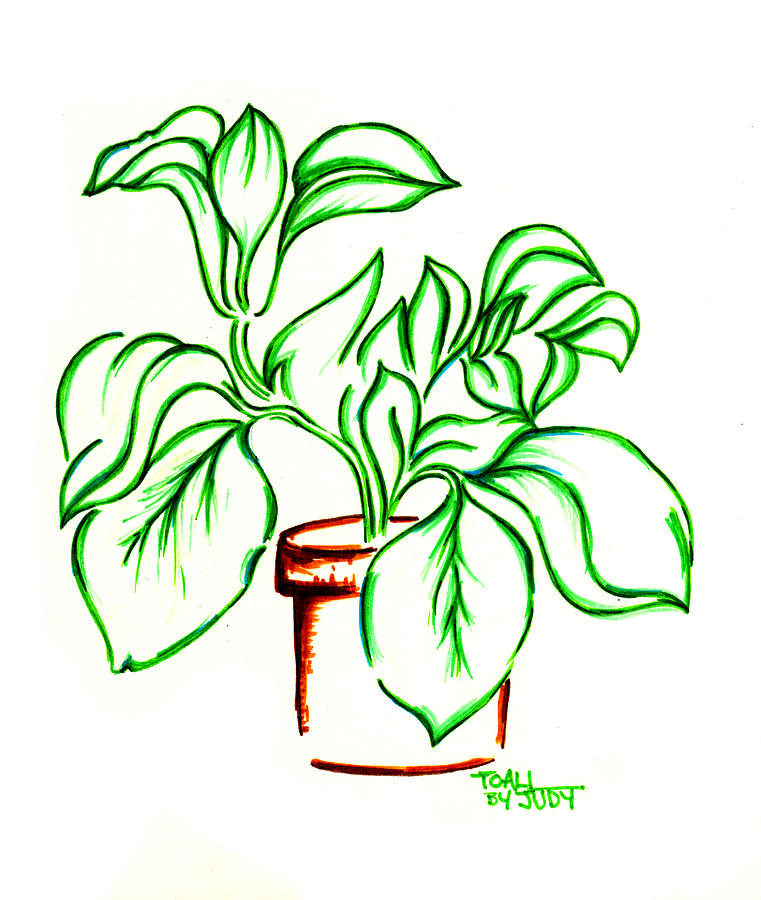

<span class="labfarm-label bg-dark text-light" *ngIf="labFarm">{{labFarm.name}}</span>
<div class="labfarm-overview bg-dark text-light" *ngIf="labFarm">
    <table class="table">
        <tbody>
            <tr>
                <td>
                    <ul class="list-group">
                        <ng-template #temperatureValues>
                            <ul class="tooltip-container">
                                <li><a>Max </a><a>{{labFarm.temperatureLevelHigh}} °C</a></li>
                                <li><a>Current</a><a>{{temperatureSensor ? temperatureSensor.sensorValue : "n/a"}} °C</a></li>
                                <li><a>Min</a><a>{{labFarm.temperatureLevelLow}} °C</a></li>
                            </ul>
                        </ng-template>
                        <li class="d-flex justify-content-between align-items-center">Temperature
                            <span placement="top" [ngbTooltip]="temperatureValues" class="badge badge-primary badge-pill">{{temperatureSensor
                                ? temperatureSensor.sensorValue : "n/a"}}
                                °C</span></li>


                        <ng-template #dustValues>
                            <ul class="tooltip-container">
                                <li><a>Max </a><a>{{labFarm.dustLevelHigh}} %</a></li>
                                <li><a>Current</a><a>{{dustSensor ? dustSensor.sensorValue : "n/a"}} %</a></li>
                                <li><a>Min</a><a>{{labFarm.dustLevelLow}} %</a></li>
                            </ul>
                        </ng-template>
                        <li class="d-flex justify-content-between align-items-center">Dust
                            <span placement="top" [ngbTooltip]="dustValues" class="badge badge-primary badge-pill">{{dustSensor
                                ? dustSensor.sensorValue : "n/a"}}
                                %</span></li>


                        <ng-template #lightValues>
                            <ul class="tooltip-container">
                                <li><a>Max </a><a>{{labFarm.lightLevelHigh}} lux</a></li>
                                <li><a>Current</a><a>{{lightSensor ? lightSensor.sensorValue : "n/a"}} lux</a></li>
                                <li><a>Min</a><a>{{labFarm.lightLevelLow}} lux</a></li>
                            </ul>
                        </ng-template>
                        <li class="d-flex justify-content-between align-items-center">Light
                            <span placement="top" [ngbTooltip]="lightValues" class="badge badge-primary badge-pill">{{lightSensor
                                ? lightSensor.sensorValue : "n/a"}}
                                lux</span></li>
                    </ul>

                </td>
                <td>
                    <ul class="list-group">
                        <ng-template #conductivityValues>
                            <ul class="tooltip-container">
                                <li><a>Max </a><a>{{labFarm.conductivityLevelHigh}} %</a></li>
                                <li><a>Current</a><a>{{conductivitySensor ? conductivitySensor.sensorValue : "n/a"}} %</a></li>
                                <li><a>Min</a><a>{{labFarm.conductivityLevelLow}} %</a></li>
                            </ul>
                        </ng-template>
                        <li class="d-flex justify-content-between align-items-center">Conductivity
                            <span placement="top" [ngbTooltip]="conductivityValues" class="badge badge-primary badge-pill">{{conductivitySensor
                                ? conductivitySensor.sensorValue : "n/a"}}
                                %</span></li>


                        <ng-template #waterValues>
                            <ul class="tooltip-container">
                                <li><a>Max </a><a>{{labFarm.maximumReservoirLevel}} L</a></li>
                                <li><a>Current</a><a>{{waterSensor ? waterSensor.sensorValue : "n/a"}} L</a></li>
                                <li><a>Min</a><a>{{labFarm.minimumReservoirLevel}} L</a></li>
                            </ul>
                        </ng-template>
                        <li class="d-flex justify-content-between align-items-center">Water level
                            <span placement="top" [ngbTooltip]="waterValues" class="badge badge-primary badge-pill">{{waterSensor
                                ? waterSensor.sensorValue : "n/a"}}
                                L</span></li>


                        <li class="d-flex justify-content-between align-items-center">Height
                            <span class="badge badge-primary badge-pill">15.4cm</span></li>
                    </ul>
                </td>
                <td>
                    <ul class="list-group">
                        <button type="button" routerLink="/farm/{{labFarm.id}}" class="btn btn-outline-light btn-sm">Go
                            to farm</button>
                        <br>
                        <br>
                        <!-- <span class="updated small italic text-right font-italic font-weight-light" *ngIf="labfarm">{{labfarm.sensors[0].sensorValues[0].timeStamp | date:'medium'}}</span> -->

                    </ul>
                </td>
                <td>
                    <div>
                        
                        
                    </div>
                </td>
            </tr>
        </tbody>
    </table>
</div>